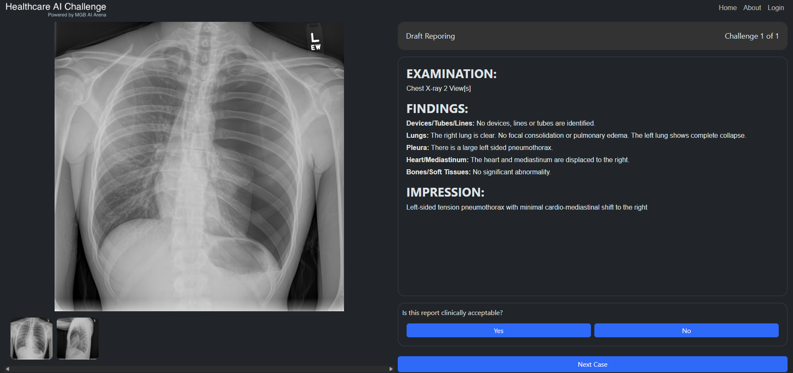
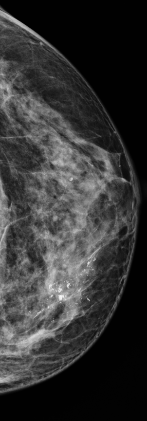
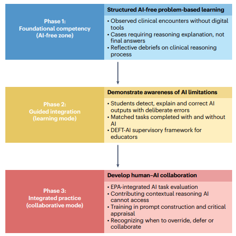

Understanding how AI can impair the development of clinical competency.
Artificial intelligence (AI) is transforming radiology with a tools ranging from image interpretation to note generation. However, when AI handles the cognitive work that trainees and attendings would normally do themselves, it can reshape what skills get built, what skills erode, and what errors become habits. This phenomenon was first mentioned in Ke et al., 2026, who identified three distinct ways AI can compromise clinical competency: never-skilling, deskilling, and mis-skilling.
This curriculum is designed to help you recognize and navigate these risks while building a foundation for understanding what AI is, how it fits within radiology, and how to use and evaluate AI tools and their outputs.
In this first lesson, we introduce the three ways AI can compromise clinical competency.
Click through the scenario below to see how AI dependency can prevent skill formation.
Dr. R's performance appeared adequate throughout training because the AI MSK detection tool was always present. However, her competency was strongly dependent on the AI and not built independently. When she rotated to a site without AI, she lacked the foundational skill to detect early AVN on her own. As a result, the skill was never built in the first place and resulted in never-skilling.
Never-skilling — Failure to develop foundational clinical reasoning competencies during formative training due to excessive AI substitution for cognitive effort. This produces an inability to demonstrate AI-independent competence required for progression, graduation, or licensure.
Dr. M is an experienced radiologist who has independently dictated structured reports for over a decade. A few years ago, his institution adopts an AI tool that draft findings and impressions from chest X-rays. Because the tool's outputs are usually accurate and require only minor edits, Dr. M begins to rely on the tool without noticing how much his own reporting practice has changed.
One day, a resident asks Dr. M for help drafting a chest X-ray report at a workstation without AI access. For the first time in years, Dr. M has to build the report without the help of the drafting AI. He struggles to clearly articulate the findings, synthesize an impression, and produce a concise, clinically actionable report.

Dr. M once had the ability to write clear, structured radiology reports. However, years of reviewing AI-generated drafts rather than composing his own reduced the cognitive effort he applied to each case. Without that practice, his reporting skill weakened and has led to deskilling. Compared to never-skilling, the foundational architecture remains intact and can be rebuilt with practice.
Deskilling — Degradation of established competencies in already trained clinicians due to prolonged AI reliance. Existing neural pathways weaken from disuse, but foundational architecture remains intact.
Dr. P is a second-year radiology resident learning breast imaging alongside an AI system that classifies mammographic findings. The AI has a systematic tendency to overclassify certain calcification patterns as suspicious, particularly in dense breast tissue. Over several months, Dr. P repeatedly sees the AI flag clustered microcalcifications as BI-RADS 4 and accepts these assessments without independent evaluation.
When reading mammograms independently, Dr. P now overcalls suspicious calcifications at a significantly higher rate than her peers — even on cases where the calcifications are clearly benign. The AI's biased threshold has become embedded in her own diagnostic reasoning, persisting even when the AI is not present.

Dr. P's failure extends beyond automation bias, where a clinician accepts an AI recommendation without independently assessing the finding. Instead, repeated exposure to the AI's errors without recognizing their mistakes has shaped her diagnostic reasoning and has left her unable to recognize the finding when the AI is absent. This is mis-skilling, in which prolonged dependence on a faulty AI impairs the development of foundational clinical skills. Datsch et al. demonstrated a related concern, finding that radiologists across levels of experience were susceptible to incorrect AI suggestions during mammogram interpretation.
Mis-skilling — Acquisition of incorrect clinical reasoning patterns through uncritical adoption of erroneous or biased AI outputs. Clinical schemas become contaminated by AI errors, leading to systematic distortion of diagnostic reasoning.
Ke et al. proposed a three-phase competency framework to prevent the effects of never-skilling. The core principle is that trainees must first learn to reason independently before learning to reason with AI (see figure below).

In Phase 1, trainees first learn in an environment without AI. Cases require reasoning through answers and reflecting on their thought process to reinforce clinical thinking. The goal is to build independent diagnostic reasoning before AI can substitute for it. In Phase 2, AI is introduced through adversarial pedagogy. Students encounter AI outputs with deliberate errors and must detect, explain, and correct them. In Phase 3, trainees work alongside AI and learn when to override, agree with, or modify AI recommendations.
This framework can benefit medical students even outside radiology, especially as AI becomes increasingly integrated within medicine. A few habits can help prevent the three forms of never-skilling. Start by working through a practice question or developing a differential independently. Once you have your own reasoning, use AI to test and expand it rather than generate the answer for you. Compare your reasoning with the AI output and ask yourself whether you would change your conclusion and why. Over time, this helps you develop both AI-independent clinical reasoning and the ability to recognize when AI adds value.